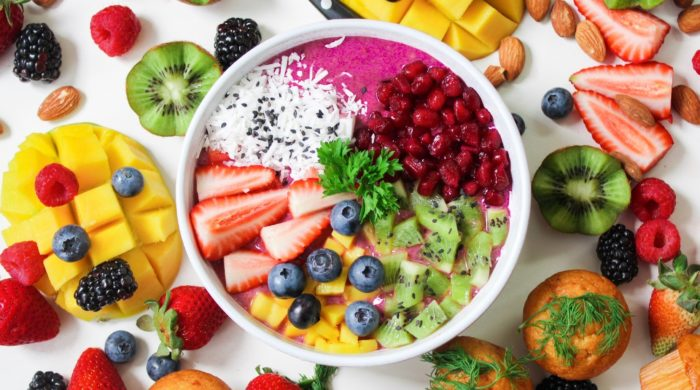

The global pandemic has altered our lives in many ways, from the Stay Home, Stay Safe order to disruptions in our work, school and travel routines, these are trying times for all of us. Something that is also unfortunately suffering during quarantine due to Covid-19 is the ability to properly exercise and eat well.
In this post, we’ll explore common challenges associated with staying healthy during Covid-19, from fitness to nutrition, as well as provide information about help you can seek if you need additional support.
Nutrition and Exercise Challenges During Covid-19
If you’re struggling just to keep up with daily routines during this pandemic, you’re not alone. Millions of Americans have reported mood swings and feelings of anxiety, depression and uncertainty in the face of their new normal — all of which are causing regular habits to be sacrificed. With all of the unexpected and frequent disruptions in our lives, it’s understandable.
If your living room has become a virtual classroom and your kitchen table your new office, it makes sense that you have less time to plan and prepare healthy from-scratch meals. Alternately, if most of your time is spent indoors due to the Washington State Stay Home,
Stay Safe order, and your gym is closed anyway, your physical activity has no doubt been reduced.
The unfortunate result of eating poorly and lacking exercise is the negative impact it can have on your immune system. When you fuel your body with unhealthy foods and engage in only limited physical activity, you’re putting yourself at a higher risk of contracting illness.
The good news is that with the right mindset and proper planning, you can overcome this obstacle and get back on track.
Ways to Maintain Nutrition and Exercise During Covid
Though taking proper care of ourselves may seem insurmountable in these unprecedented times, fitness during Covid and eating nutritionally rich foods during Covid are paramount to optimal health. Here are a few ways to stay ahead of the game:
Acknowledge and respond to stress.
There is no way to escape the additional mental strain you’re feeling, but the more you can limit and reduce stress, the better you’ll be both emotionally and physically. Take time to breathe, make sure you’re getting enough sleep and limit your consumption of social media and news that can trigger anxiety and depression.
You may also find it helpful to engage in a spiritual practice that aligns with your belief system, such as prayer or meditation.
Being centered mentally will help all else fall into place.
Reconnect with Mother Earth.
If you have green spaces that are open to visit, take regular walks or runs in nature. The fresh air will be therapeutic, and the change of scenery will give you a mental boost.
Build an at-home workout regimen.
If you’re unable to get outside, or simply need to remain indoors to limit contact with others because you’re at high-risk for contracting the virus, get your exercise at home. You don’t need expensive equipment to develop an effective, diverse routine that both provides necessary cardio activity and builds muscle strength.
Heart.org has wonderful guidelines on the variety of exercises you should complete and the time duration for each of them.
Plan healthy meals.
Though fresh foods are always preferred, if they are temporarily difficult to access, you can create many shelf-stable meals that are not processed and are rich in nutrition. Frozen vegetables and fruits retain many of their vitamins, and even canned beans and meats can be incorporated into numerous healthy meals.
Visit The Nutrition Source for a library of healthy, balanced recipes to try during quarantine and enjoy thereafter.